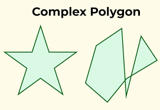
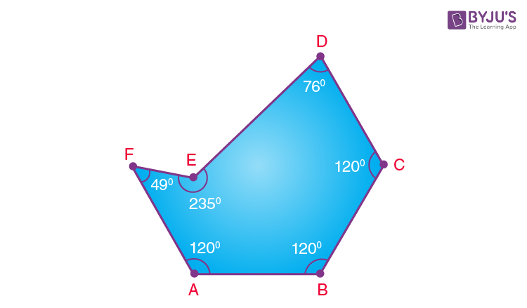
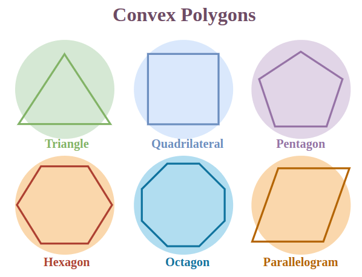
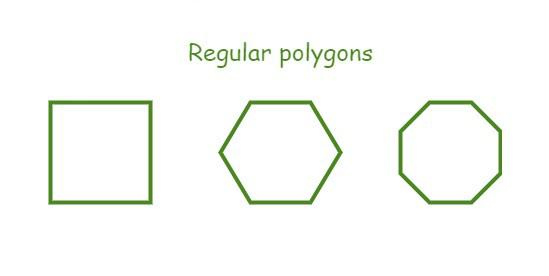
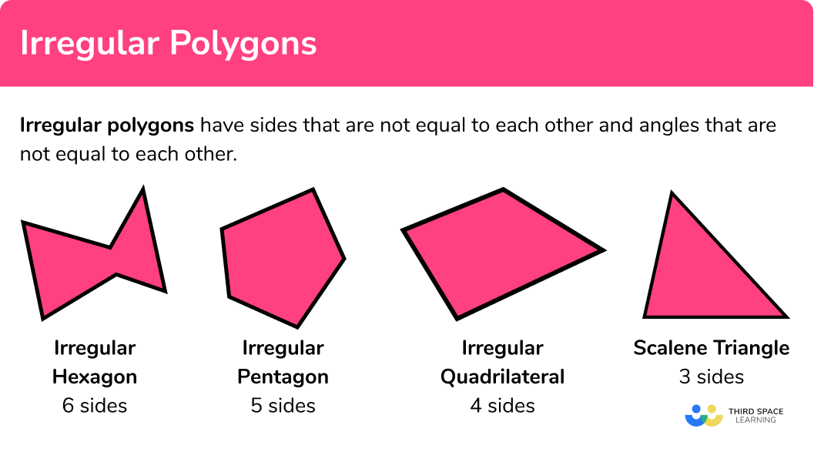

Polygons are fundamental geometric shapes in mathematics and computer graphics. A polygon is a closed, two-dimensional shape with straight sides. Each side of a polygon intersects exactly two other sides, and the points where these sides meet are called vertices. The segments connecting these vertices are known as edges. The term "polygon" is derived from the Greek words "poly," meaning many, and "gonia," meaning angles, which highlights the defining characteristic of polygons: their many angles.
Simple polygons are geometric figures with non-intersecting sides, forming a single closed boundary. They are the foundation of many graphic applications due to their straightforward structure and ease of manipulation.
Complex polygons possess intersecting sides, creating multiple boundaries within the shape. These intricate structures are often encountered in advanced simulations and modeling, requiring specialized algorithms for accurate rendering.
Concave polygons have at least one interior angle exceeding 180 degrees, causing the shape to curve inward. They may have indentations or coves.
Convex polygons have all interior angles measuring less than 180 degrees. They are outwardly curved and do not have indentations.
Regular polygons have all sides and angles equal, resulting in a symmetrical shape. These polygons, such as squares and equilateral triangles, are aesthetically pleasing and frequently used in design and pattern recognition.
Irregular polygons lack uniformity in their sides or angles, leading to a diverse range of shapes. These polygons are prevalent in real-world objects and landscapes, demanding adaptive algorithms for accurate representation.
